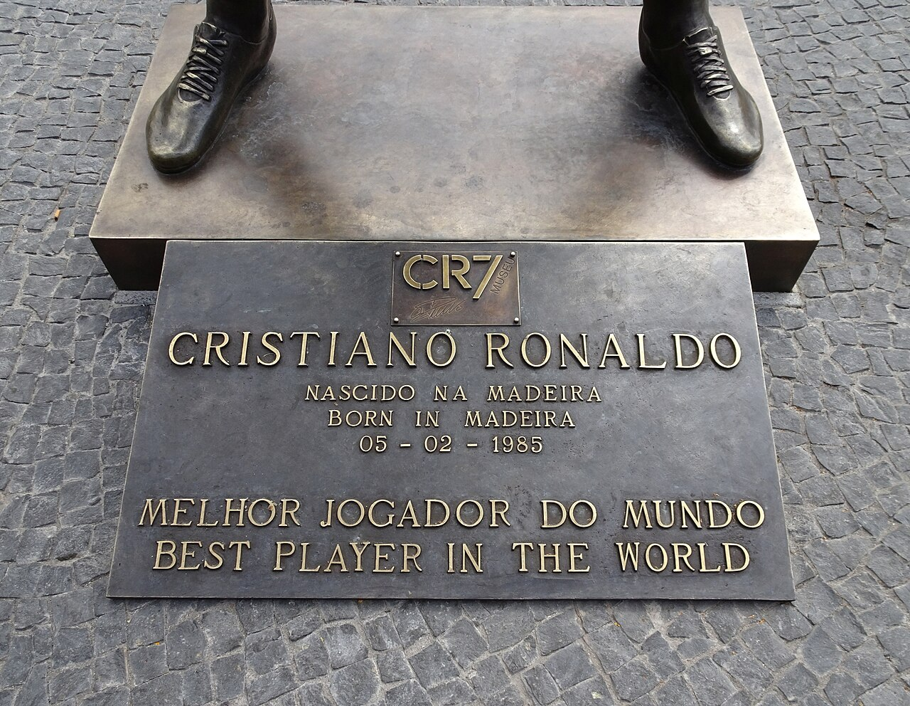

Delantero portugués nacido en Funchal (Madeira). Ganador de cinco Balones de Oro y
cinco Ligas de Campeones, es el máximo goleador histórico de la Liga de Campeones y de
las selecciones nacionales absolutas. Su carrera recorre Sporting de Lisboa,
Manchester United, Real Madrid, Juventus y Al Nassr.
Cristiano Ronaldo durante su etapa en el Real Madrid (2012).
01 — Quién es
Biografía
Cristiano Ronaldo dos Santos Aveiro nació el 5 de febrero de 1985 en
Funchal, capital de la isla portuguesa de Madeira, en una familia humilde. Empezó a
jugar en el Andorinha, el club del barrio, y pasó después al Nacional de Madeira.
Con solo doce años se trasladó solo a Lisboa para incorporarse a la cantera del
Sporting de Portugal, una decisión temprana que marcó su carácter
competitivo.
Debutó con el primer equipo del Sporting en 2002 y apenas un año después,
tras un amistoso ante el Manchester United, el club inglés lo fichó
y le entregó el mítico dorsal número 7. En Inglaterra pasó de ser un extremo
habilidoso y desequilibrante a un goleador determinante: en 2008 ganó la
Liga de Campeones y su primer Balón de Oro.
En 2009 firmó por el Real Madrid, donde vivió su etapa más
prolífica: nueve temporadas, más de 450 goles y cuatro Ligas de Campeones,
incluidas tres consecutivas entre 2016 y 2018. Después llegaron la
Juventus (2018-2021), el regreso al Manchester United
(2021-2022) y el Al Nassr de Arabia Saudí desde enero de 2023.
Con la selección de Portugal es el jugador con más partidos y más
goles de su historia. Fue capitán del equipo campeón de la
Eurocopa 2016 y de la Liga de Naciones 2019, los dos primeros
grandes títulos internacionales del país. Fuera del campo destacan su marca
personal CR7, su museo en Funchal y una fuerte presencia en redes sociales.

Placa y estatua junto al Museu CR7, en Funchal (Madeira), la ciudad natal del jugador.
02 — Paso a paso
Trayectoria
Filtra por etapa y despliega cada tarjeta para leer los detalles de cada club.
Mostrando 6 etapas de 6.
Debutó en el primer equipo con 17 años y disputó una única temporada como
profesional en Lisboa. Un amistoso frente al Manchester United en el
Estadio José Alvalade bastó para que el club inglés decidiera ficharlo.
Partidos oficiales31
Goles5
Títulos1 Supercopa de Portugal
Seis temporadas bajo la dirección de Alex Ferguson en las que evolucionó de
extremo regateador a goleador de época. La temporada 2007-08 fue su
consagración: 42 goles, título de Premier League, Liga de Campeones y su
primer Balón de Oro.
Partidos oficiales292
Goles118
Títulos3 Premier League · 1 Champions · 1 Mundial de Clubes
Su etapa más productiva y la que lo convirtió en máximo goleador histórico del
club. Superó los 450 goles en menos de 440 partidos y encadenó tres Ligas de
Campeones consecutivas (2016, 2017 y 2018), además de las de 2014.
Aquí ganó cuatro de sus cinco Balones de Oro.
Partidos oficiales438
Goles450
Títulos4 Champions · 2 Ligas · 2 Copas del Rey
Tres temporadas en Italia en las que ganó dos Scudetti y fue
máximo goleador de la Serie A en 2020-21. Mantuvo un promedio superior
a un gol cada dos partidos pese al cambio de liga y de estilo.
Partidos oficiales134
Goles101
Títulos2 Serie A · 1 Copa de Italia
Volvió a Old Trafford doce años después. Fue el máximo goleador del equipo
en la temporada 2021-22, aunque el club atravesaba un ciclo irregular.
Su contrato se rescindió en noviembre de 2022.
Partidos oficiales54
Goles27
TítulosSin títulos en esta etapa
En enero de 2023 fichó por el Al Nassr saudí, un traspaso que impulsó la
proyección internacional de la liga. Allí ha seguido superando marcas
goleadoras y ha sido máximo anotador de la competición.
EtapaEn curso
RolDelantero y capitán
Títulos1 Copa de Campeones Árabes (2023)
03 — Los números
Estadísticas destacadas
Cifras aproximadas de su carrera profesional. Los contadores se animan al
entrar en pantalla; si prefieres menos movimiento, el sitio respeta la opción
«reducir animaciones» de tu sistema.
900+
Goles oficiales
Entre clubes y selección, es el primer futbolista en superar la barrera de los 900 goles oficiales.
5
Balones de Oro
Conquistados en 2008, 2013, 2014, 2016 y 2017.
5
Ligas de Campeones
Una con el Manchester United (2008) y cuatro con el Real Madrid.
140
Goles en Champions
Máximo goleador histórico de la máxima competición europea de clubes.
135+
Goles con Portugal
Récord absoluto de goles con una selección nacional masculina.
220+
Partidos internacionales
Jugador con más internacionalidades de la historia del fútbol masculino.
Registro por club
Partidos y goles oficiales por club a lo largo de su carrera.
Club
Etapa
Partidos
Goles
Sporting de Portugal
2002 – 2003
31
5
Manchester United
2003 – 2009
292
118
Real Madrid
2009 – 2018
438
450
Juventus
2018 – 2021
134
101
Manchester United
2021 – 2022
54
27
Al Nassr
2023 – actualidad
En curso
En curso
Nota didáctica: las cifras son redondeadas y sirven como ejemplo de maquetación.
Para datos actualizados conviene consultar las fuentes enlazadas al final de la página.
04 — Imágenes
Galería
Ocho fotografías con licencia libre procedentes de Wikimedia Commons que
recorren su carrera, del Real Madrid al Al Nassr. Pulsa sobre cualquier
imagen para ampliarla; ciérrala con la tecla Esc.
Real Madrid — sus primeras temporadas de blanco.
Selección de Portugal, 2010 — camino de la Eurocopa 2012.
Real Madrid, 2012 — su etapa más goleadora.
Real Madrid — con la segunda equipación, hacia 2013.
Balón de Oro — lo ganó cinco veces.
Portugal, 2013 — antes de un amistoso ante Croacia.
Juventus, 2019 — tres temporadas y dos Scudetti en Italia.